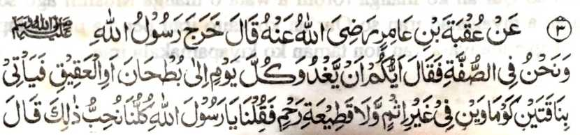
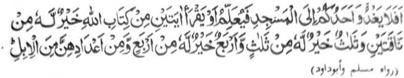

Miyakathitayan ko ‘Uqbah bin ‘Amir (Radhiallaho ‘Anho) a pitharo iyan, “Lominiyo so Rasulollah (Sallallaho ‘Alaihi wa Sallam) (ko walay niyan) ko masa a zisi-i kami sa Suffah na pitharo iyan, ‘Antawa-a rekano i mabaya mamadi-an oman kapipita sa But-han o di na sa ‘Aqiq na makakowa-on sa dowa a babay a onta a daon madosa ago da a minitholaka iyan non a tonganay niyan?’ Pitharo ami, ‘Khababaya-an nami anan!’ Pitharo iyan, ‘So kasong o isa rekano sa Masjid na mangenda-o o di na matiya sa:
- dowa a Ayaat a ped ko Kitab o Allah na mapiya rekaniyan a di so dowa a babay a onta,
- go so telo a Ayaat na mapiya rekaniyan a di so telo a babay a onta,
- go so pat a Ayaat na mapiya rekaniyan a di so pat a babay a onta,
- go so saden sa kadakel iyan a Ayaat na mapiya rekaniyan a di so lagid iyan sa kadakel a babay a onta.’”
So Suffah na ibebetho ko isa a darepa a mipoporo sa soled a Masjid o Rasulollah (Sallallaho ‘Alaihi wa Sallam) sa Madina. Aya komakaden non na so manga miskin a manga Muslim a Muhajireen [madakel a manga Muhajir - tomiyogalin sa Madina pho-on sa Makkah]. Ibebetho kiran na so ‘Ashabus-Suffah’ [manga tao sa Suffah]. So kadakel iran na pekhasalin-salin ko masa: So Allama Suyuti (Rahmatullahi ‘Alaihi) na mi-itong iyan a magatos ago sakatao ago inisorat iyan ko salakao a kitab so manga ngaran iran.
Giya But-han ago giya ‘Aqiq na dowa a manga ala a padi-an a parada-i sa onta sa obay a Madina. So onta, balabao ron so babay a onta na makapali bato-bato, na tanto a pekhababaya-an o manga Arab.
Giyangkoto a katharo sa “daon madosa” na mala-i kipantag. So nganin a khakowa sa da kapelogati na odi miyaka-okit sa tegel nggolalan sa giyasab o di na miyokit sa piyanekhao. So Rasulollah (Sallallaho ‘Alaihi wa Sallam) na tiyabiya iyan non angkoto a dowa a okit. So kapaka-kowa sa nganin a di kaphelogatan a go da a dosa on na tanto a khababaya-an o langon o tao, ogaid na taralebi sa kapiya so kapaganad sa pira timan a Ayaat.
Marayag a benar a kena ba giyabo so isa o di na dowa a onta. Ka apiya aya den makowa o tao so kadato ko pito a ‘Aqlim (ma-ana giya den a donya) na khaganatan bo o tao, o di imanto na mapita (ko masa a kapatay niyan), ogaid na so balas o isa bo a Ayaat na tani-tiyasa. Pekha-ilay tano den imanto a so tao na tomo-on niyan igira bigan sekaniyan sa salad bo a pirak (a kena baon ibabanay a khikasoy niyan), a di so tiyadinan sekaniyan sa sanggibo a pirak sa di mathay. Giyangkoto a tadin na ba sekaniyan den kiyatago-an sa awida akal sabap sangkoto a tadin a daden a miyanggona niyan non.
Aya mata-an, na giyangka-iya a Hadith na tapa-os o ba tano milagid so nganin a di tatap ko nganin a tani-tiyasa. Melagid o di-i melogat o di na domedekha, na so tao na pephamimikirana niyan o so gi-i niyan kaperomasay na pekhailang ko gi-i kapanimo-a ko di tatap a kapakalaba si-i sangka-iya donya, o di na si-i niyan mi-aantap ko kaparoliya ko da-a tamana iyan (a kapaginetao). Kanogon niyan so miya-ilang a galebek a khasabapan sa tani-tiyasa a ringasa.
So oriyan a katharo sangkoto a Hadith a “go so saden sa kadakel iyan a Ayaat na mapiya rekaniyan a di so lagid iyan sa kadakel a babay a onta.” na telo a madadalemon a ma-ana:
So ama aken [Lindawan o Allah so Qobor iyan] na zosoramig sekaniyan sangka-iya osayan sabap sa kapakalelebi niyan sa kipantag. Kena ba aya ma-ana ini na aya balas o satiman a Ayaat na lagid o satiman o di na dowa liman a onta. Langona-i na baden pangoyat ago ibarat. Miya-aloy ko ona-ana-i a so satiman a Ayaat a aya balas iyan na tatap ago kakal na makalelebi ko apiya isa den a ndato-an ko pito a Aqlim, a aya khaoriyan non na khabinasa.
[So pito a Aqlim na giyoto so pito a mala a kadidiyamongan ko manga inged sa donya ma-ana giya: Asia, North America, South America, Europe, Africa, Australia, go giya Antarctica.]
So Mulla Ali Qari (Rahmatullahi ‘Alaihi) na inizorat iyan a tothol ko isa a barasimba a Shaikh a somiyong sa Makkah ka nomiyaik. So kiyapaka-oma niyan sa Jeddah, na so saba-ad ko manga ginawa-i niyan a manga padagang na piyangeni ran non a malo pagethay sa Jeddah, ka aden mala a malaba iran ko manga dagangan niran sabap ko barakah o katatago iyan kiran. Aya pen a mapipikir iran na aden makanggona so saba-ad ko manga panakawan angkoto a Shaikh ko pekhalaba iran ko dagangan niran.
Paganay na pitharo angkoto so di niyan kakharawa ko ba sekaniyan pagethay kiran, ogaid na sabap ko kapethegela iran non, na ini-iza iyan kiran o ay taman a kala pekhalaba iran ko dagangan niran. Pitharo iran a mbaram-barang, ogaid na aya pithaman niyan na makatakep siran. Pitharo angkoto a Shaikh, “Tanto niyo den a gi-i peromasayan angka-iya a maito a laba; Sabap ko da-a rarantek iyan a laba na diyaken kharao o bako mibagak so Sambayang si-i sa Haram a aya balas o omani Sambayang na gi-i thake-takepen sa magatos nggibo.”
Aya mata-an na seketano a manga Muslim na pamimikiranen tano o anda sabap a pantag bo ko tanto a maito a laba sangka-iya donya, na pekhasalak pen a aya tano pekhiraga so taralebi a mala a kamapiya-an o niyawa.